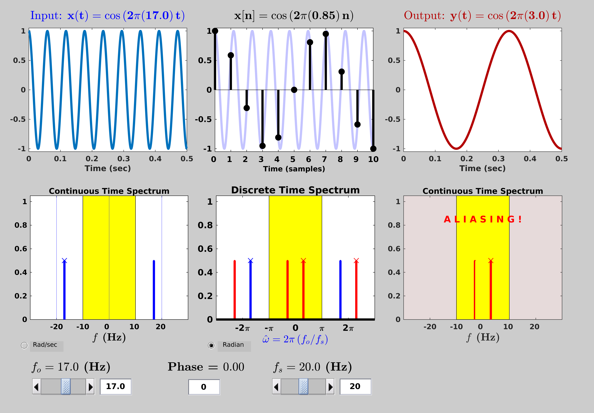

|  |
The Continuous-Discrete Sampling Demo is a program that shows the continuous and discrete spectra (and signals) during sampling.
Features:
- Users can change the input frequency and sampling rate.
- Frequency axis can be labeled in hertz or radians/sec.
- Reconstruction through D/A is also shown.
|